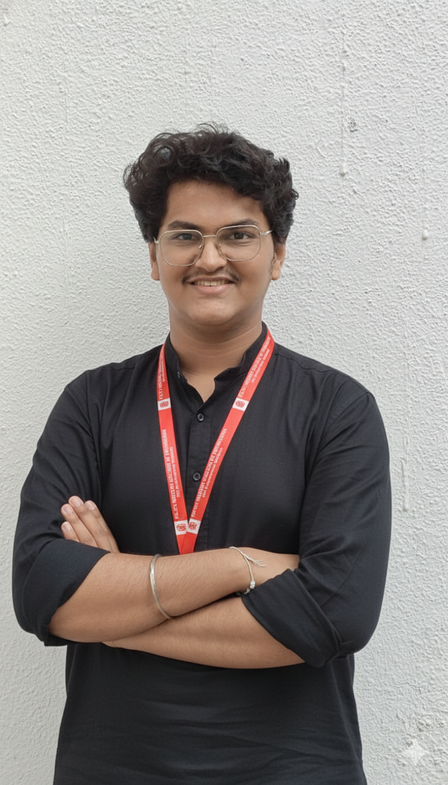

MCA and Bsc(cs) Graduate

bio- MCA student and Product Engineer with hands-on experience building fullstack web applications, IoT systems, and embedded hardware solutions. Proficient in React, Node.js, Python, C++, and ROS 2. Proven track record of end-to-end product delivery from hardware prototyping to cloud deployment. National hackathon finalist and active tech community leader.
work-
Infranex Developer Intern | InFranex — Jan 2026 – Present:
Building integrated web, IoT, and software systems handling real-time data from 10+ embedded devices.
Automating deployment workflows for digital media and embedded applications, reducing manual effort by ~40%.
Contributing to R&D in robotics and system architecture, including ROS 2-based automation pipelines.
Coordinated cross-functional delivery of integrated systems handling real-time data across 10+ connected devices.
Streamlined workflows and processes, driving a ~40% reduction in manual effort through process automation.
Collaborated with technical and R&D teams to align execution with project goals and deadlines.
Projects-
- OMNI-X: AI for Hardware | March 2026 – Present Built a hybrid
Web IDE and CLI that converts natural language prompts into fully
functional ESP32 firmware using Python (Flask), PlatformIO, and LLMs
(Gemini / Groq). Automated the full IoT lifecycle — AI code generation,
compilation, and wireless OTA updates — eliminating manual firmware
flashing. System currently manages firmware deployment for a modular
farming robot with interchangeable soil-sensing, planting, and movement
modules.
-Modular Farming Robot — PRITH-V | E-Yantra Innovation
Competition, Oct 2025 – Present Developing a modular robotics system
capable of adapting tools for 5+ distinct farming tasks using a custom
chassis and motor control. Designed and 3D-prototyped interchangeable
modules for soil sensing, planting, and autonomous movement using ROS 2
and C++.
- NFC-Based Attendance System | Aug 2025 – Present Built a
full-stack web and IoT attendance management platform integrating event
management, notices, and smart attendance for 500+ students as well as
office use. Engineered an NFC-enabled IoT attendance box using ESP32,
Arduino, C++, and Firebase for real-time data synchronization. Designed a
React + Tailwind CSS frontend and a PHP + MySQL backend, handling
full-stack development and cloud deployment end-to-end.
- YOLO | Duality AI Hackathon Image segmentation model for an unmanned autonomous vehicle,
trained on a dataset of land/sky/river/rocky-plains/plains imagery so the
vehicle can understand terrain in the field. Built with CNN, U-Net, and
PyTorch.
Skiils-
Technical Skills Languages: C++, C, Python, JavaScript, Java, PHP,SQL
Frontend: React.js, Next.js, HTML5, Tailwind CSS
Backend: Node.js, Express.js, PHP
Databases: MongoDB, MySQL, PostgreSQL, Firebase, Supabase
Embedded / IoT: ROS 2, PlatformIO
Design & CAD: Figma, FreeCAD, TinkerCAD
Data Science / ML: NumPy, Pandas, Matplotlib, Scikit-learn, SciPy
Tools: Git, GitHub, VS Code
Achivements-
1st Rank – Agentic AI Hackathon, organized by PES Modern College of Engineering
2nd Rank – Odoo x VIT Hackathon (May 2026)
4th Rank – HACKOVERFLOW 4.0, 2026 (National Hackathon) – Top 10 Finalist
Runner-Up, Sep 2023 – Intra-College Statistical Project, PVG COSC. Topic: Household Waste Management in Maharashtra — data collection
and statistical analysis of regional waste-management challenges
Leadership & Extracurricular- Club Member – Management of Avishkar and Startup (MARS) Club, PES Modern College of Engineering Project Coordinator – MCA Department, PES Modern College of Engineering (led planning and cross-team coordination) Electronics Educator – TechNest: led a 4-week online and hands-on electronics program for 9th graders, teaching circuit principles, Arduino basics, and sensor integration, culminating in student-built projects using real-world problem statements